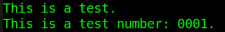
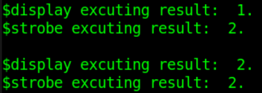
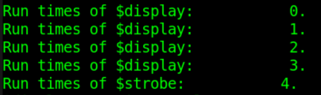
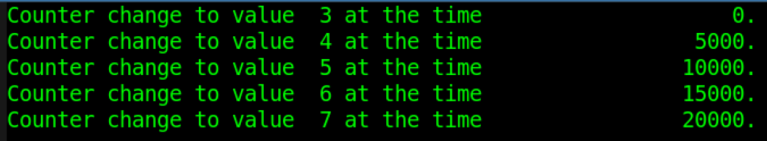

キーワード：$display, $write, $strobe, $monitor
Verilogでは、主に以下の4つのシステムタスクを使用してデバッグ情報を表示（プリント）します：$display, $write, $strobe, $monitor。
$display
$displayの使い方はC言語のprintf関数と非常に似ており、文字列を直接プリントできるほか、文字列内で変数のフォーマットを指定して関連する変数をプリントすることもできます。例えば：
$display("This is a test."); //直接打印字符串
$display("This is a test number: %b.", num); //打印变量 num 为二进制格式

変数の表示フォーマットを指定しない場合、変数の値は文字列中の位置に応じて表示され、文字列連結に参加することに相当します。例えば：
$display("This is a test number: ", num, "!!!");
フォーマットを指定しない場合、$displayはデフォルトで10進数を表示します。$displayb, $displayo, $displayh の表示フォーマットはそれぞれ2進数、8進数、16進数です。同様に $writeb, $writeo, $writeh, $strobeb などもあります。
以下の表は一般的なフォーマットの説明です。
| %h または %H | 16進数フォーマット出力 | %c または %C | ASCIIコードフォーマット出力 |
| %d または %D | 10進数フォーマット出力 | %e または %E | 指数フォーマット出力 |
| %o または %O | 8進数フォーマット出力 | %f または %F | 浮動小数点数 (real型) フォーマット出力 |
| %b または %B | 2進数フォーマット出力 | %t または %T | 現在時刻フォーマット出力 |
| %s または %S | 文字列フォーマット出力 | %m または %M | 現在の階層アクセスパス出力 |
エスケープ文字を使用して特殊文字を表示することもできます。例えば：
| \n | 改行文字 | %% | パーセント記号"%" |
| \t | タブ文字（Tabキー） | \0 | 8進数で表される文字 |
| \\ | バックスラッシュ"\"文字 | \0x | 16進数で表される文字 |
| \" | 二重引用符 |
$write
$wirte の使い方は $display と完全に同じですが、前者は情報を表示し終わるたびに自動改行されず、後者は自動的に改行されます。出力後に改行が不要な場合、表示タスク $write を使用できます。
$write("This is a test");
$write("number: %b", num);
$write("!!!\n");
$strobe
$strobe はストローブ表示タスクです。$strobe の使い方は $display と同じですが、情報をプリントするタイミングが $display とは異なります。
多くの文が $display タスクと同じ時間内に実行される場合、これらの文と $display の実行順序は不定であり、通常はプログラムの順序構造に従って実行されます。
$strobe は他の文が実行完了した後にのみ表示タスクを実行します。例えば：
実例
initial begin
a = 1 ;
#1 ;
a <= a + 1 ;
//最初の表示
$display("$display excuting result: %d.", a);
$strobe("$strobe excuting result: %d.", a);
#1 ;
$display();
//2回目の表示
$display("$display excuting result: %d.", a);
$strobe("$strobe excuting result: %d.", a);
end
実行結果は次のとおりです。
最初の表示タスクを実行する際、非ブロッキング代入と $display が同時に実行され、$display は代入前の変数の値を表示し、$strobe は代入後の変数の値を表示します。これはまさに $strobe のストローブ表示特性を示しています。

もう一つ例を見てみましょう：
実例
initial begin
for (i=0; i<4; i=i+1) begin
$display("Run times of $display: %d.", i);
$strobe("Run times of $strobe: %d.", i);
end
end
$display はプログラム構造に従って表示操作を4回実行します。一方、このループ文は0時刻に実行されるため、$strobe が表示する変数の値はループ終了時の変数の結果、すなわち i=4 でループを抜けた後に $strobe が実行されます。これは表示タスク $strobe の時刻表示特性を示しています。

$monitor
$monitor は監視タスクであり、変数の継続的な監視に使用されます。変数が変化するたびに、$monitor は対応する情報をプリント表示します。
例えば：
実例
initial begin
cnt = 3 ;
forever begin
# 5 ;
if (cnt<7) cnt = cnt + 1 ;
end
end
initial begin
$monitor("Counter change to value %d at the time %t.", cnt, $time);
end
